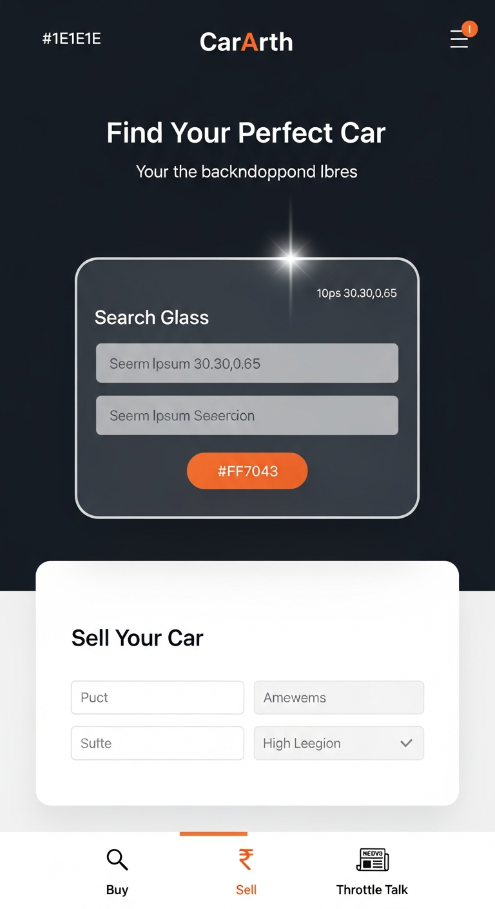
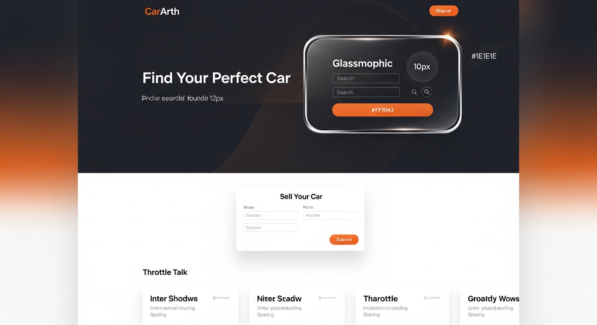

Hybrid Mode Glassmorphism - Mobile First Design
Mobile-first responsive design featuring dark mode glassmorphic hero section with search card, light mode form for optimal usability, and bottom tab navigation.
Full-width layout with dark glassmorphic hero section, centered search card, white background forms, and content grid for Throttle Talk articles.
These mockups demonstrate the hybrid glassmorphism design system with section-specific theming.